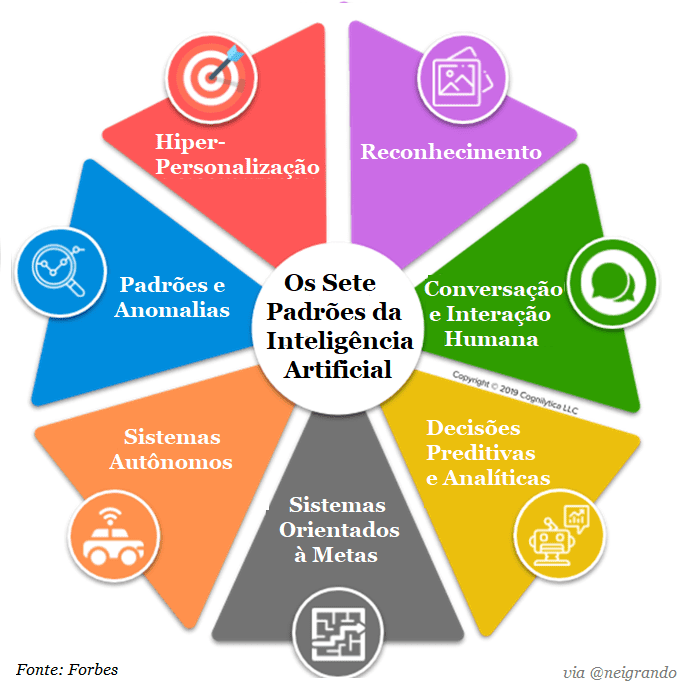

>NeuralHub_
>Home_
>Introducao_
>Exemplos_
>Galeria_
>Pesquisa_
ERRO NA LEITURA
Galeria de Imagens
IA em câmeras
IA auxilio com voz
IA nas industrias
IA em empresas de softwares
IA em hospitais

IA e seus padrões